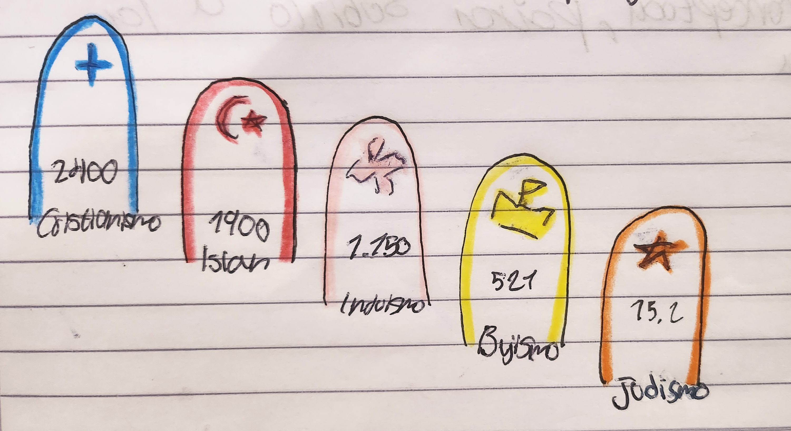
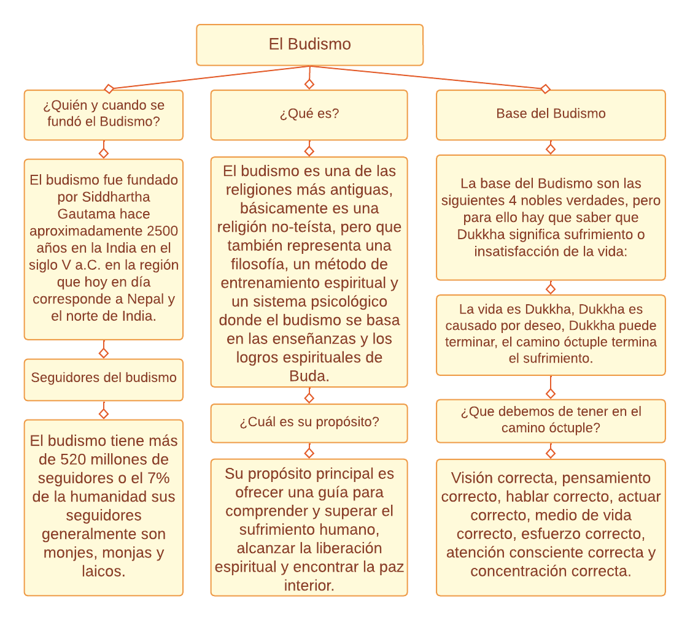

Investiga al Dios Brahman, también investiga la reencarnación, la liberación y el misterio divino.
ㅤ
2- ¿Qué busca el hinduismo?
Busca la realización de la divinidad interior y la liberación del ciclo de nacimiento y muerte a través de la búsqueda del moksha.
ㅤ
3- ¿Quién es el fundador del hinduismo?
No tiene un fundador en específico, es desconocido.
ㅤ
4- Deidad máxima del hinduismo?
Trimurti.
ㅤ
5- ¿Qué tipo de dios tiene el hinduismo?
El hinduismo adora a múltiples deidades y reconoce a Brahman como la realidad última y transcendente divina.
ㅤ
6- Nombre y número de seguidores del hinduismo
Hindúes, unos 800 millones.
ㅤ
7- Texto sagrado del hinduismo
Bhagavad gita, Puranas, Maha Bhárata.
ㅤ
8- Lengua litúrgica del hinduismo
Sánscrito.
ㅤ
9- ¿Dónde nace el hinduismo?
El hinduismo nace en india.
ㅤ
10- ¿Cuál es la tierra o lugar del hinduismo?
La tierra del hinduismo es en la india.
ㅤ
11- País con mayor cantidad de hindúes
El país con mayor cantidad de hindúes es la india.
ㅤ
12- Ramas del hinduismo
Gran cantidad de subdivisiones, Vishnuismo, Shivaísmo, Lingayat, etc...
ㅤ
13- ¿Cómo está formado el clero del hinduismo?
Está formado por Gurús, swamis, etc...
ㅤ
14- Nombre de las religiones relacionadas por el hinduismo
Budismo, jaihismo, sijismo.
ㅤ
15- ¿Por qué se llama a la religión hindú védica?
Se llama así por sus libros sagrados.
ㅤ
16- ¿Qué es el hinduismo según el documento?
El hinduismo es una tradición religiosa de la india. En sánscrito se conoce como sanatana dharma.
ㅤ
17- ¿Qué es el sanatana en el hinduismo?
Es la ley eterna o la verdad eterna.
ㅤ
18- ¿Qué traduce la palabra hindú según el documento?
El término "hindú" se deriva del sánscrito "Sindhu", que significa "río" en referencia al rín Indo.
ㅤ
19- ¿Cómo se le llama al cielo en el hinduismo?
Se le llama Swarga, svarga.
ㅤ
20- ¿Qué es el Brahman en el hinduismo?
Es el absoluto, eterno y sin cambios.
ㅤ
21- ¿Cuáles son los monumentos hindúes?
Son arquitecturas como templos y esculturas.
ㅤ
22- ¿Cómo se llaman los templos hindú?
Templo de Kaishlashnath, Brihadisvara, Badrinath, etc...
ㅤ
23- ¿Qué son las castas?
La casta es una realidad religiosa y social.
ㅤ
24- ¿Cómo es la jerarquía de las castas?
La casta superior (la de los Brahmanes)
La segunda (la forman los "Koshatriyas")
La tercera (la forman los "Vaishyas").
ㅤ
25- ¿Qué es Dharma?
Dharma se refiere a los deberes, responsabilidades y leyes morales.
ㅤ
26- ¿Qué es la "Sutri"?
La sutri se refiere a la categoría de textos sagrados que se consideran revelados y de origen divino.
ㅤ
27- ¿Qué indica el nombre Upanishad?
"Sentarse junto a alguien".
ㅤ
28- ¿Quiénes son los "Shadus"?
Son monjes hindúes.
ㅤ
29- ¿Qué es yoga?
Es el método filosófico-Ascético para llegar a la identificación con el absoluto Brahman.
ㅤ
30- ¿Cuál es el mejor sistematizador del yoga?
Patanjali.
ㅤ
31- ¿Cuáles son las 8 etapas de renuncia?
- Conducta moral irreprochable.
- Pureza interior y exterior.
- Dominio de ciertas posiciones del cuerpo y manera de sentarse.
- Dominio de la respiración a voluntad.
- Liberar la atención de las impresiones de los sentidos.
- Fijación del pensamiento.
- Meditación.
- Contemplación absoluta.
ㅤ
32- Generalmente ¿Dónde viven los hinduistas en España?
Viven en Canarias, Ceuta, Melilla, Madrid, Barcelona, Valencia, etc...
ㅤ
33- ¿Significado de "Moksha"?
Significa liberación.
ㅤ
34- ¿Cómo lo llaman al río sagrado?
"Nuestra madre Ganges"
ㅤ
35- ¿Por qué todos los hindúes desean morir en Benares?
Porque purifican los pecados, libera del ciclo vida-muerte, gracia divina, etc..
ㅤ
36- ¿En qué consiste el camino de la acción (Kharma)?
Consiste en cumplir cada acto de la vida como una ofrenda a la divinidad.
ㅤ
37- ¿En qué consiste el camino de la devoción (Bhakti)?
Consiste en adorar a la divinidad por medios de visitas a los templos.
ㅤ
38- ¿Qué pretende el camino de la sabiduría (Jñana)?
Pretende llegar a comprender la realidad última de la divinidadmpor medio del estudio de los textos.
ㅤ
39- En el cuarto camino (yoga) ¿Qué se busca?
Busca la liberación por medio de ejercicios físicos y respiratorios.
ㅤ
40- ¿Significado de Hare Krishna?
Es un mantra y una expresión devocional.
ㅤ
41- ¿Por qué las vacas son una especie de animales legendarios?
Porque según se dice: "Son los rayos luminosos de la aurora, las manchas del sol, los rayos perdidos del sol".
ㅤ
42- ¿Qué es lo que pasaría si se matara una vaca?
"Quien mate una vaca irá al infierno tantos años cuantos pelos tenía el cuerpo de la vaca".
ㅤ
43- ¿Qué es Metém Samatosis?
Significa "Transmutación de un cuerpo a otro".
ㅤ
44- ¿Cuáles son las 6 darsanas o tradiciones doctrinales?
- Nyaya y Vaisesika
- Samkaya y Yoga
- Mimansa y Vedanta.
ㅤ
45- ¿Cuál es el más largo poema del mundo?
"Maha Bhárata"
ㅤ
46- ¿De cuántos libros y pareados se componen?
18 libros con 90.000 pareados.
ㅤ
47- Poema más corto dedicado a Krisma
"Ramayana".
ㅤ
48- ¿Por qué es importante ese poema?
Es importante por la aparición de Rema.
ㅤ
49- ¿Qué son los Puramas?
Son textos escritos con leyendas sobre Kala, Varuma, Indra y demás dioses.
ㅤ
50- ¿Cuáles son sus sectas más importantes?
- Los Visnuitas dedicados a Visnú
- Los Sivaítas dedicados a Siva
- Los Brahmaitas dedicados a Brahma.
ㅤ
ㅤ


ㅤ
ㅤ
MARIA JOSÉ CADAVID MARÍN:
ㅤ
1- ¿Qué investiga el hinduismo?
La existencia del Dios Brahman,la reencarnación y la liberación.
ㅤ
2- ¿Qué busca el hinduismo?
La libertad es indispensable porque la autoridad no es creadora.
ㅤ
3- ¿Quién es el fundador del hinduismo?
No tiene un fundador, ya que se trata de un conjunto de manifestantes religiosos en vez de una religión unitaria.
ㅤ
4- Deidad máxima del hinduismo?
Trimurti.
ㅤ
5- ¿Qué tipo de dios tiene el hinduismo?
El hinduismo adora a múltiples deidades y reconoce a Brahman como la realidad última y transcendente divina.
ㅤ
6- Nombre y número de seguidores del hinduismo
Hindúes, 1140 millones.
ㅤ
7- Texto sagrado del hinduismo
La Bhagavadgita, se compone de 700 estrofas escritas en sánscrito.
ㅤ
8- Lengua litúrgica del hinduismo
Sánscrito.
ㅤ
9- ¿Dónde nace el hinduismo?
El hinduismo nace en india.
ㅤ
10- ¿Cuál es la tierra o lugar del hinduismo?
Proviene de la India.
ㅤ
11- País con mayor cantidad de hindúes
El país con mayor cantidad de hindúes es la india.
ㅤ
12- Ramas del hinduismo
Vishnuismo, Shivaísmo, shaktismo y smartismo.
ㅤ
13- ¿Cómo está formado el clero del hinduismo?
Se caracteriza por estar conformado pordiferentes denaminaciones.
ㅤ
14- Nombre de las religiones relacionadas por el hinduismo
Budismo, cristianismo, sijismo e Islan.
ㅤ
15- ¿Por qué se llama a la religión hindú védica?
Se llama así por sus libros sagrados.
ㅤ
16- ¿Qué es el hinduismo según el documento?
El hinduismo es una tradición religiosa de la india. En sánscrito se conoce como sanatana dharma.
ㅤ
17- ¿Qué es el sanatana en el hinduismo?
Es la ley eterna o la verdad eterna.
ㅤ
18- ¿Qué traduce la palabra hindú según el documento?
El término "hindú" se deriva del sánscrito "Sindhu", que significa "río" en referencia al rín Indo.
ㅤ
19- ¿Cómo se le llama al cielo en el hinduismo?
Swarga, o Svarga.
ㅤ
20- ¿Qué es el Brahman en el hinduismo?
Dios creador del universo y miembro de la Trimurti
ㅤ
21- ¿De dónde proviene el nombre de la India?
Del griego antiguo Ινδίας "India"
ㅤ
22- ¿En dónde se desarrolló la primera civilización india?
Valle del río indo.
ㅤ
23- ¿Qué construyó la primera cívilización india?
Construyeron grandes cuidades con enormes edificios.
ㅤ
24- ¿Qué indica el nombre Upanishad?
"Sentarse junto a alguien".
ㅤ
25-¿Cuál es el mejor sistematizador del yoga?
Patanjali.
ㅤ
26- ¿La india a la manera occidental es un país o un condinente?
Continente.
ㅤ
27- ¿Qué significa la palabra hindú?
Es una palabra persa que significa india.
ㅤ
28- ¿A quienes se les daba el nombre de Indio?
A los habitantes del Valle de Indo.
ㅤ
29- ¿Por qué es difícil explicarles el Hinduismo a los occidentales?
Debido a su complejidad y en ocasiones contradiccíon.
ㅤ
30-¿Comó se podría definir mejor el Hinduismo?
Se tendría que hablar no de una religion dicho, si no de cientos de caminos diversos que poseen en comun algunos creencas basícas.
ㅤ
31- ¿Cuál es la religión nacional de la India?
El hinduismo.
ㅤ
32- ¿Aproximadamente cuál es la catidad de personas que viven en probreza?
Se estima unos 4.500.000
ㅤ
33- ¿Cuál es la cosa más habla de la vitalidd de su gente?
Es la poderosa y cambiante tradición oral.
ㅤ
34- ¿Bajo qué nombre se divinizó el Fuego?
Bajo el nombre Agni.
ㅤ
35- ¿Qué es la que dificulta un correcto conocimiento del hínduimo por parte de los cristianos??
La exuberancia hindú es un aspecto que dificulta un correcto conocimientoy valoración por parte de los cristianos.
ㅤ
36- ¿A quienes se adoran por ser el protector y el Dios del viento?
A ni sirva, el protector y a voy_ Dios del viento.
ㅤ
37- ¿Qué son la costa sacerdotal en el hínduimo?
Los Brahmones.
ㅤ
38- ¿A quiénes se les denomina hinduistas?
A las personas que practican alguna de las religiones del hinduismo, pero también a quien forma parte de la cultura hinduista.
ㅤ
39- ¿De dondé proviene la palabra hinduismo?
Originalmente proviene del idioma persa hindú, que era la manera en que las persas pronunciaban el río sindú..
ㅤ
40- ¿Cuáles son los 3 estados dónde el hinduismo es mayoritaria?
Actualmente solo en la india, nlepal y al isla africona de Mauricio.
ㅤ
41- ¿El hinduismo es una religión dagmática o antidogmatica?
Anti dogmática.
ㅤ
42- ¿Qué pasaria si alguuien mata una vaca?
"Quien mate una vaca irá al infierno tantos años cuantos pelos tenía el cuerpo de la vaca".
ㅤ
43- ¿Cuál es el poema más popular de la india?
El Maha Bhárata.
ㅤ
44- ¿Qué son los Upanishad?
- Cada uno de los más de 200 libros sagrados hinduistas escritos en idioma sánscrito.
ㅤ
45- ¿Cómose puedenllamar también los darsanas?
Dáishana."
ㅤ
46- ¿Qué significa la palabra casta en la india clasica?
1Es varna, que viene a sinificar calor.
ㅤ
47- Al pasar de lso años las costas dejaron de definirse por el color de piel y se convirtió en una fracción social y profesional. Esta establece una sociedad basada en 3 niveles ¿cuales son?
La casta superior, lasegunda de las castas, la tercera de las castas.
ㅤ
48- ¿Según el hinduismo como se creo el universo??
Brahman lo creó y continuamente es destruido y nace de nuevo.
ㅤ
49- ¿Qué signica el punto que los hindúes se pintan en la frente?